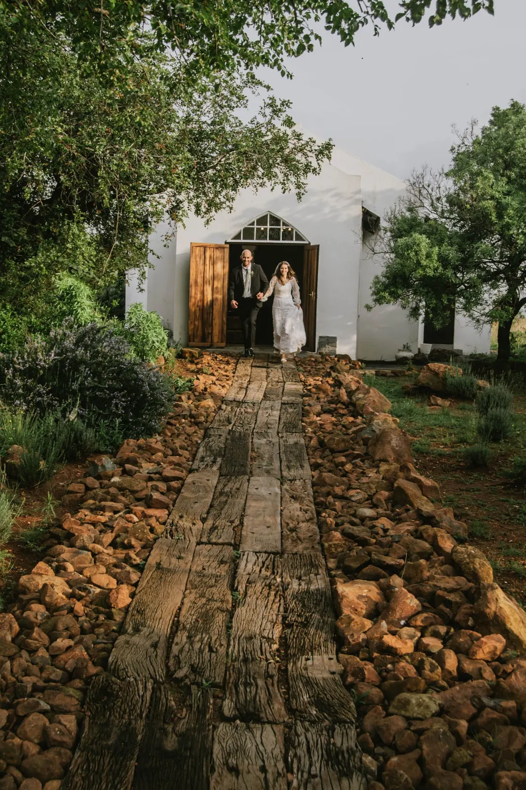

Galleries / Old Chapel
Naledi & Sam
A tiny white chapel, a railway sleeper path and a garden lunch that went on until dark.

WhereOld Chapel, Magaliesberg, South Africa
When8 November 2025
Guests65
SeasonLate spring
The story
Naledi and Sam kept it small on purpose. Sixty five people, one long lunch, and a chapel so small half the guests watched through the open doors.
A storm rolled in just after the vows and cleared twenty minutes later, which gave us the softest light of the whole year for the walk out.


Next wedding
Elif & Can
Planning something similar?
Tell me about your venue and your date and I will let you know if I am free.
Enquire